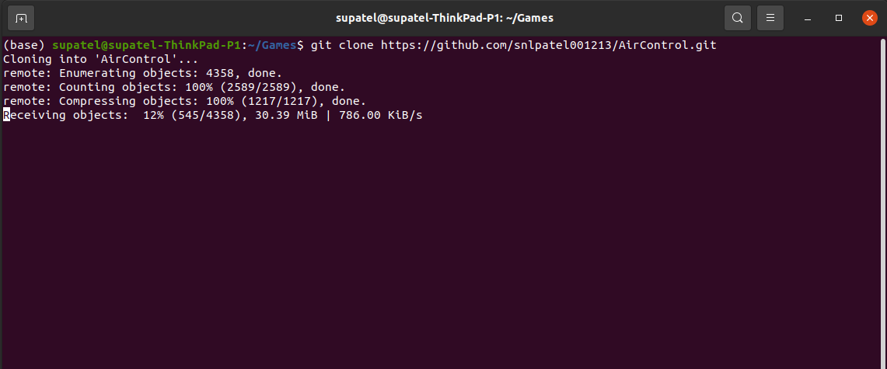
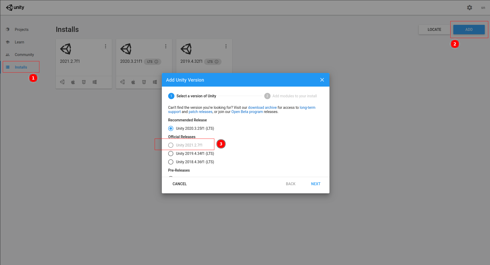
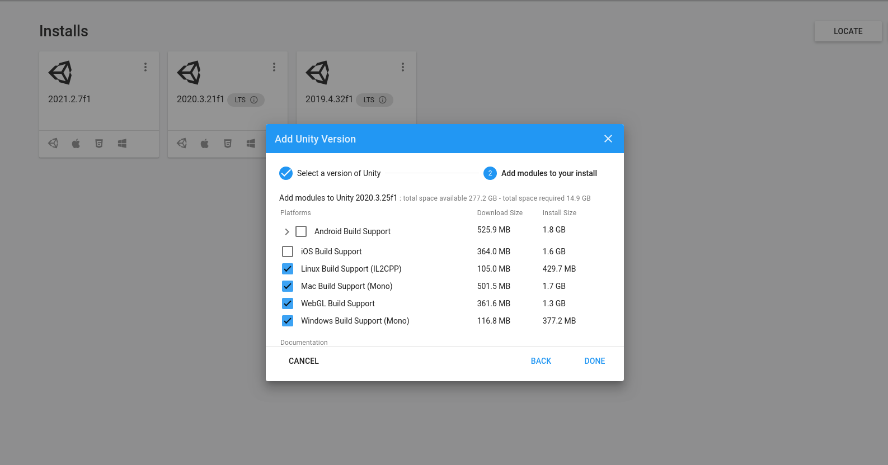
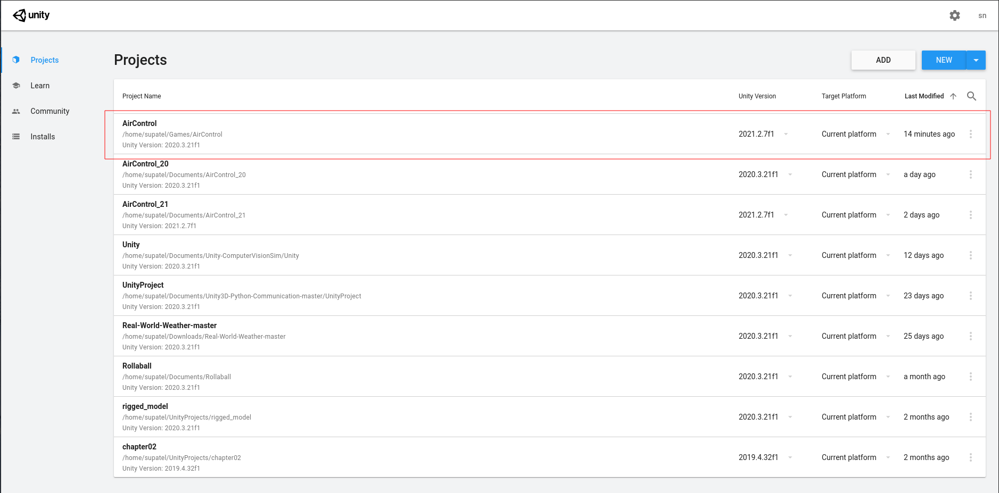
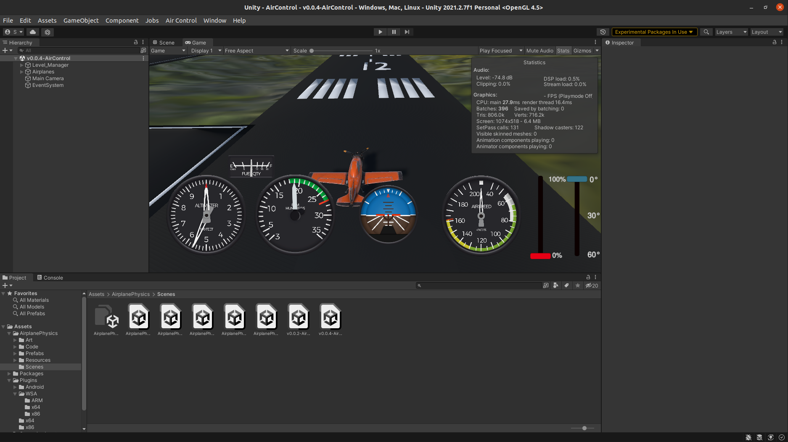

Working With Sources¶
Clone the source code¶
Clone Aircontrol Repository Github
https://github.com/snlpatel001213/AirControl.gitGo to Aircontrol_20/Assets/Python
cd Aircontrol/PythonInstall Aircontrol python package
path/to/python setup.py install
Download Unity Engine¶
Follow the instruction given at : https://unity.com/download
Download the Unity Hub : Follow the instructions onscreen for guidance through the installation process and setup. 
Choose your Unity version Aircontrol is developed on Unity version
2021.2.7f1on pressing next, select Linux, Mac or Windows support, you may select all or one according to your OS. 
Add Aircontrol Project to Unity¶
Start Unity Hub and add new project to it

Once added Aircontrol project to Hub, launch it. 
Finally you will see the project loaded to the Unity. 